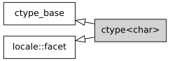

std::ctype<char>
来自cppreference.com
| 在标头 <locale> 定义
|
||
| |
||
此 std::ctype 的特化为类型 char 封装字符分类特性。与使用虚函数的通用 std::ctype 不同，此特化会用表查找分类字符（通常会更快）。
基类 std::ctype<char> 实现等价于最小 "C" 本地环境的字符分类。如果用非默认的分类表参数构造为 std::ctype_byname<char> 或用户定义的派生刻面，那么就能扩展或修改分类规则。所有 std::istream 的有格式输入函数都要求在输入分析中将 std::ctype<char> 用于字符分类。

继承图
嵌套类型
| 类型 | 定义 |
char_type
|
char
|
数据成员
| 成员 | 描述 |
std::locale::id id [静态]
|
刻面标识 |
const std::size_t table_size [静态]
|
分类表的大小，至少 256 |
成员函数
构造新的 ctype<char> 刻面 (公开成员函数) | |
析构 ctype<char> 刻面 (受保护成员函数) | |
| 获得字符分类表 (公开成员函数) | |
[静态] |
获得 "C" 本地环境字符分类表 (公开静态成员函数) |
| 用分类表分类字符或字符序列 (公开成员函数) | |
| 用分类表定位序列中首个符合给定分类的字符 (公开成员函数) | |
| 用分类表定位序列中首个不符合给定分类的字符 (公开成员函数) | |
调用 do_toupper ( std::ctype<CharT> 的公开成员函数) | |
调用 do_tolower ( std::ctype<CharT> 的公开成员函数) | |
调用 do_widen ( std::ctype<CharT> 的公开成员函数) | |
调用 do_narrow ( std::ctype<CharT> 的公开成员函数) |
受保护成员函数
[虚] |
转换一个或多个字符为大写 ( std::ctype<CharT> 的虚受保护成员函数) |
[虚] |
转换一个或多个字符为小写 ( std::ctype<CharT> 的虚受保护成员函数) |
[虚] |
将一个或多个字符从 char 转换到 CharT ( std::ctype<CharT> 的虚受保护成员函数) |
[虚] |
将一个或多个字符从 CharT 转换到 char ( std::ctype<CharT> 的虚受保护成员函数) |
继承自 std::ctype_base
嵌套类型
| 类型 | 定义 |
mask
|
未指定的位掩码类型 (BitmaskType) （枚举、整数类型或 bitset） |
成员常量
space [静态] |
鉴别空白字符分类的 mask 值 (公开静态成员常量) |
print [静态] |
鉴别可打印字符分类的 mask 值 (公开静态成员常量) |
cntrl [静态] |
鉴别控制字符分类的 mask 值 (公开静态成员常量) |
upper [静态] |
鉴别大写字符分类的 mask 值 (公开静态成员常量) |
lower [静态] |
鉴别小写字符分类的 mask 值 (公开静态成员常量) |
alpha [静态] |
鉴别字母字符分类的 mask 值 (公开静态成员常量) |
digit [静态] |
鉴别数字字符分类的 mask 值 (公开静态成员常量) |
punct [静态] |
鉴别标点字符分类的 mask 值 (公开静态成员常量) |
xdigit [静态] |
鉴别十六进制数字字符分类的 mask 值 (公开静态成员常量) |
blank [静态] (C++11) |
鉴别空格字符分类的 mask 值 (公开静态成员常量) |
alnum [静态] |
alpha | digit (公开静态成员常量) |
graph [静态] |
alnum | punct (公开静态成员常量) |
示例
下列示例演示修改 ctype<char> 以记号化逗号分隔值：
运行此代码
#include <cstddef>
#include <iostream>
#include <locale>
#include <sstream>
#include <vector>
// 此 ctype 平面将逗号和换行符分类为空白符
struct csv_whitespace : std::ctype<char>
{
static const mask* make_table()
{
// 复制 "C" 本地环境表
static std::vector<mask> v(classic_table(), classic_table() + table_size);
v[','] |= space; // 逗号将被分类为空白符
v[' '] &= ~space; // 空格将不被分类为空白符
return &v[0];
}
csv_whitespace(std::size_t refs = 0) : ctype(make_table(), false, refs) {}
};
int main()
{
std::string in = "Column 1,Column 2,Column 3\n123,456,789";
std::string token;
std::cout << "默认本地环境：\n";
std::istringstream s1(in);
while (s1 >> token)
std::cout << " " << token << '\n';
std::cout << "修改了 ctype 的本地环境：\n";
std::istringstream s2(in);
s2.imbue(std::locale(s2.getloc(), new csv_whitespace));
while (s2 >> token)
std::cout << " " << token << '\n';
}
输出：
默认本地环境：
Column
1,Column
2,Column
3
123,456,789
修改了 ctype 的本地环境：
Column 1
Column 2
Column 3
123
456
789
缺陷报告
下列更改行为的缺陷报告追溯地应用于以前出版的 C++ 标准。
| 缺陷报告 | 应用于 | 出版时的行为 | 正确行为 |
|---|---|---|---|
| LWG 695 | C++98 | table() 和 classic_table() 是受保护成员函数
|
改成公开成员函数 |
参阅
| 定义字符分类表 (类模板) | |
| 定义字符分类类别 (类) | |
| 表示系统提供的具名本地环境的 std::ctype (类模板) |